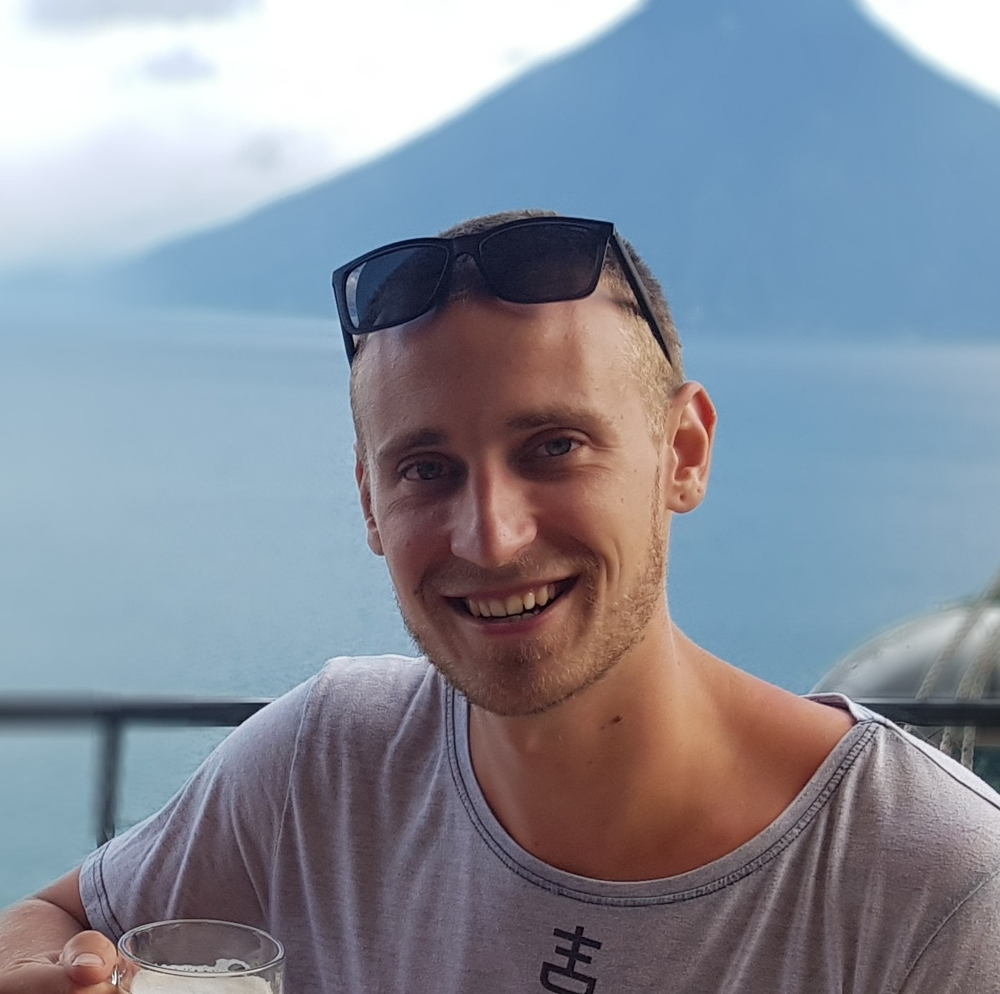

Welkom bij Damsteeg Productions, totaalleverancier op het gebied van geluid, licht en video.
Damsteeg Productions is een ZZP bedrijf dat zich voornamelijk bezig houd met de opbouw, installatie en afbouw van licht en geluid. Dit varieert van grote festivals zoals Pink Pop tot een privé feest bij iemand thuis.
Damsteeg Productions is een AV-bedrijf gevestigd in Amersfoort (NL). Wij zijn gespecialiseerd
in het advies, ontwerp en de uitvoering van uw evenement. Door onze jarenlange ervaring en hoge
kwaliteitsnormen zijn wij dagelijks bezig ons maximaal in te zetten voor uw projecten, met als doel
u te ontzorgen.
Organiseert u een bedrijfs-, beurs of publieksevenement? Ons team professionals denkt graag met u mee in de aanloop van het evenement. Wij leveren een totaalpakket, afgestemd op uw wensen en budget. Ons assortiment met hoogwaardige licht-. geluids- en videoapparatuur maakt het mogelijk het maximale uit uw evenement te halen. Wij denken met u mee en zoeken graag naar de mogelijkheden om de beschikbare ruimte en budgetten zo optimaal mogelijk te benutten. Wij zien deze projecten altijd als maatwerk. Vraagt u gerust een offerte bij ons op.
Bent u op zoek naar een betrouwbare partner die uw evenement in goede banen kan leiden? Of wilt u licht, geluid of AV-apparatuur huren? De medewerkers van Damsteeg Productions staan voor u klaar. Wilt u meer informatie over de mogelijkheden, kijk dan verder op onze site of neem direct contact op met ons.
